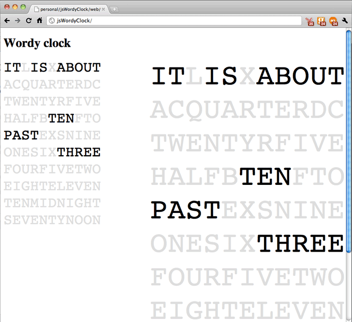

JsWordyClock is a JavaScript port of Ken Lim's pyWordyClock, with the appropriate modifications for use on the web as an Internet Clock. It's a word-based, approximate time clock, accurate to within about 3 minutes, and updates itself every minute. It comes with its own JavaScript test suite.
You can see it in action on my website http://www.paulcarvill.com/
Paul Carvill (paul@paulcarvill.com)
Paul Carvill (paul@paulcarvill.com)
You can download this project in either zip or tar formats.
You can also clone the project with Git by running:
$ git clone git://github.com/paulcarvill/jsWordyClock